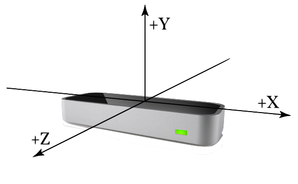
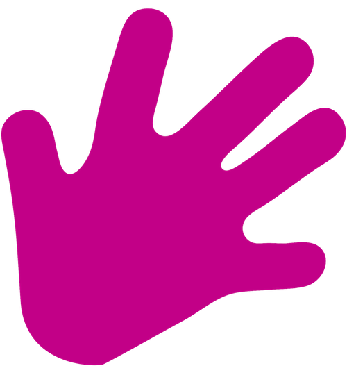
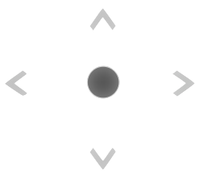
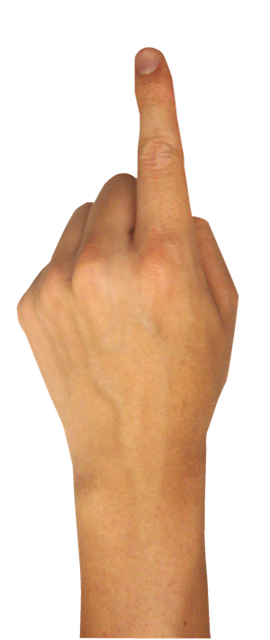
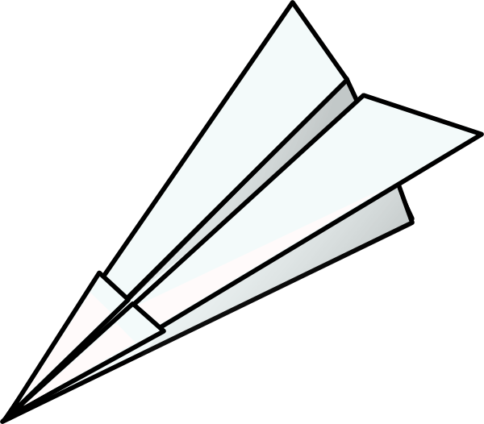
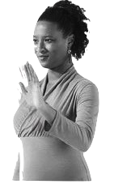
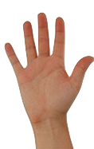

Jazz hands JS Library
Jazz Hands is a JavaScript library for motion
controllers.
To begin, hold a single hand
to the right of the controller.


Basic Implementation
Single handed indication of up, down, left, right.. zoom in and out.

Starting in neutral
A neutral position with Jazz hands is the position where no navigation event is triggered.
To continue, hold a single hand to the right of the controller.

Navigation zones
Moving along the X, Y and Z axis allows for 6-degrees of movement.
Keeping your hand in one of the six "zones" triggers a timer-based event to fire.
Implementation
A basic implementation just an init and a binding to navigation. The source is
available on github.
Jazz.init()
Jazz.on('navigation', function(n) {
console.log(n);
});
>
Jazz Hands Events
There are 3 additional jazz hands events you can listen for (fingers, grab/release, progress)

Fingers Event
The fingers event is triggered when initializing
with a fingersText array. Element order = finger #.

Jazz.init({
fingersText: ["Zoom Out?","Zoom in!"]
});
Jazz.on("fingers", function(fingers) {
console.log("on fingers = " + fingers);
});
>
Grab/Release
A "grab" event is triggered when a fist is clenched. "release" is called once the fist is unclenched.

Jazz.on("grab", function () {
console.log("Grabbing");
});
Jazz.on("release", function (progress) {
console.log("Release");
});
>
Progress
The "progress" event gives constant feedback on the movement of the hand, as it relates to a navigation motion.

Jazz.on("progress", function (progress) {
var upPercent = progress["up"];
var downPercent = progress["down"];
var rightPercent = progress["right"];
var leftPercent = progress["left"];
});
>
Under the hood
Additionally, you can access the raw gestures and frames, and some other minor options.

Gestures
Simplifed gestures are available on the "gestures" event.
These native gestures have been simplified to a single gesture, instead of an array of possibilities.

// g = CircleGesture, KeyTapGesture, ScreenTapGesture
Jazz.on("gestures", function (g) {
console.log(g.type);
});
>
Frames
Frame data is available from the Jazz.on("frames") event.
You can evaluate the frame object and have access to all the captured event data from leap JS.

Jazz.on("frames", function (f) {
console.log(f.currentFrameRate+","
+hands.length+","
+f.fingers.length);
});
>
Other options
Hide or show the UI using Jazz.hide() or Jazz.show()
Toggle the "helper arrows" by setting Jazz.disableHelper.
Toggle the "timer" by setting Jazz.disableTimer.
During run-time setup finger events using Jazz.setFingersText(["one","two"]).
Clear the finger event bindings using Jazz.clearFingersText().